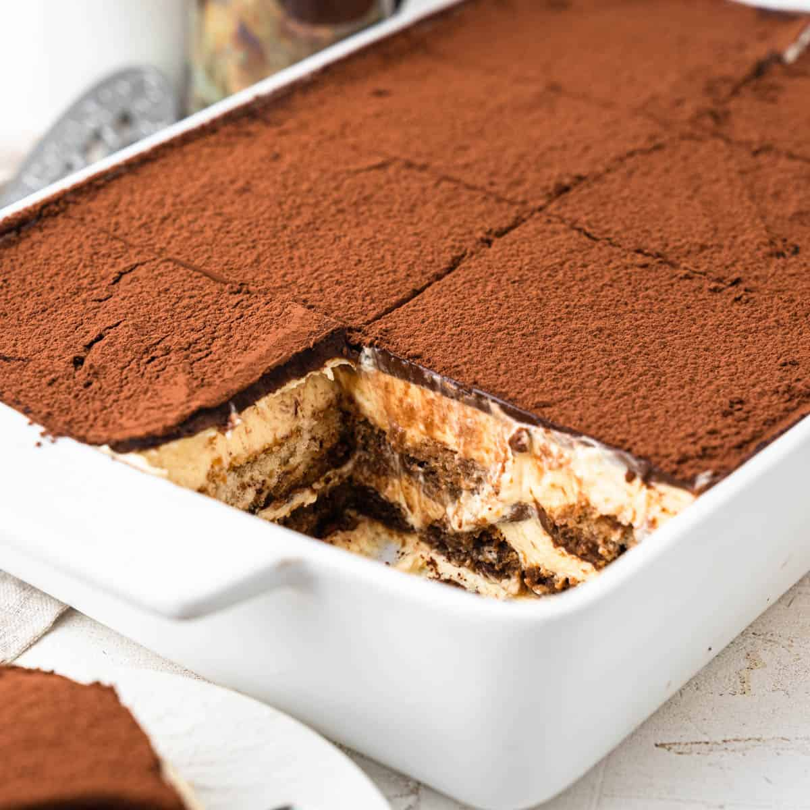
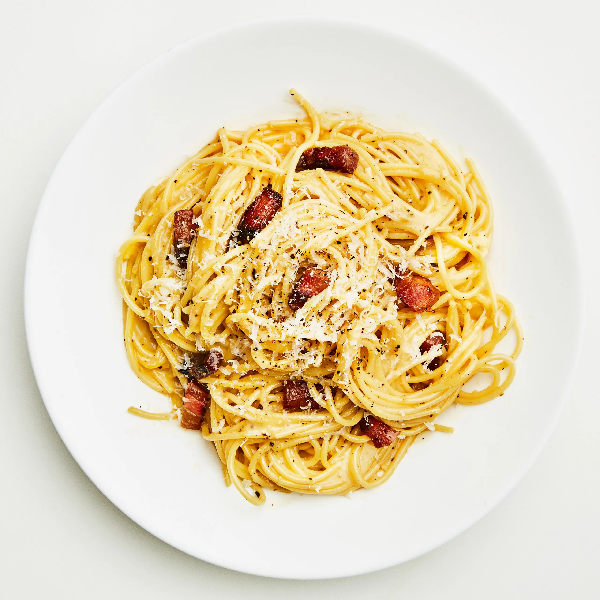
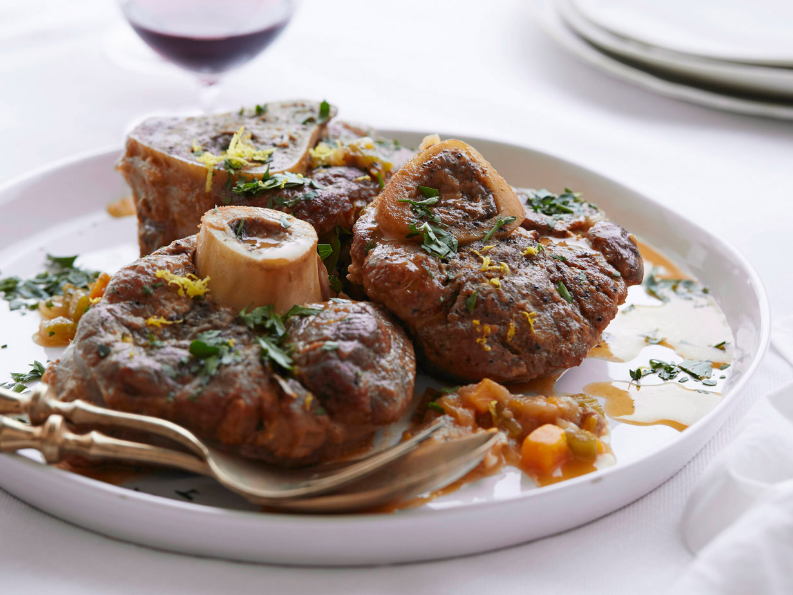

Lasagna
A layered pasta dish with meat sauce, béchamel, and cheese.
Ingredients and Steps
Ingredients:
- 12 lasagna noodles
- 1 pound ground beef or Italian sausage
- 1 jar (24 oz) marinara sauce
- 2 cups ricotta cheese
- 1 egg
- 2 cups shredded mozzarella cheese
- 1 cup grated Parmesan cheese
- 1/2 teaspoon salt
- 1/4 teaspoon black pepper
- 2 tablespoons chopped fresh parsley (optional)
Steps:
- In a bowl, combine calamansi juice, vinegar, garlic, ginger, annatto oil, soy sauce, sugar, salt, and black pepper to create the marinade.
- Add the chicken pieces to the marinade, ensuring they are well coated. Marinate for at least 3 hours or overnight for best results.
- Preheat the grill to medium heat.
- Grill the chicken pieces, basting occasionally with the remaining marinade, until fully cooked and the skin is nicely charred.
- Serve hot with steamed rice and dipping sauces like vinegar with garlic and chili.

Pizza Margherita
A pizza topped with tomato sauce, mozzarella, and basil.
Ingredients and Steps
Ingredients:
- 1 pizza dough
- 1/2 cup pizza sauce
- 1-2 fresh tomatoes, thinly sliced
- 1 cup fresh mozzarella, sliced or shredded
- Fresh basil leaves
- 2 tablespoons olive oil
- Salt and pepper to taste
Steps:
- Preheat your oven to 475°F (245°C).
- Roll out the pizza dough on a floured surface to your desired thickness.
- Place the rolled-out dough on a pizza stone or baking sheet.
- Spread the pizza sauce evenly over the dough.
- Arrange the tomato slices and fresh mozzarella on top of the sauce.
- Drizzle with olive oil and season with salt and pepper.
- Bake in the preheated oven for 10-15 minutes, or until the crust is golden brown and the cheese is bubbly and melted.
- Remove from the oven and top with fresh basil leaves.

Risotto alla Milanese
Creamy saffron-infused risotto with Parmesan.
Ingredients and Steps
Ingredients:
- 1 1/2 cups Arborio rice
- 4 cups chicken or vegetable broth
- 1/2 cup dry white wine li>1/4 teaspoon saffron threads
- 1 small onion, finely chopped
- 2 tablespoons unsalted butter
- 1/4 cup grated Parmesan cheese
- Salt and pepper to taste
- Fresh parsley for garnish (optional)
Steps:
- In a small bowl, combine the saffron threads with 2 tablespoons of hot broth to bloom the saffron and set aside.
- In a pot, bring the broth to a simmer and keep it warm over low heat.
- In a large skillet or saucepan, melt 1 tablespoon of butter over medium heat. Add the chopped onion and sauté until translucent, about 5 minutes.
- Add the Arborio rice to the skillet and stir to coat the grains with butter. Cook for about 2 minutes, until the rice is slightly toasted.
- Pour in the white wine and cook, stirring constantly, until the wine is fully absorbed.
- Add the saffron and its soaking liquid to the rice. Stir well to combine.
- Begin adding the warm broth to the rice, one ladleful at a time, stirring frequently. Wait until the broth is almost completely absorbed before adding more. Continue this process until the rice is creamy and cooked to al dente, about 18-20 minutes.
- Remove the skillet from heat and stir in the remaining tablespoon of butter and grated Parmesan cheese. Season with salt and pepper to taste.
- Garnish with fresh parsley if desired and serve hot.

Tiramisu
A dessert with coffee-soaked ladyfingers, mascarpone, and cocoa.
Ingredients and Steps
Ingredients:
- 6 large egg yolks
- 3/4 cup granulated sugar
- 1 cup mascarpone cheese
- 1 1/2 cups heavy cream
- 2 cups brewed espresso, cooled
- 1/4 cup coffee liqueur (optional)
- 1 package ladyfingers
- Cocoa powder for dusting
- Dark chocolate shavings (optional)
Steps:
- In a large bowl, whisk together the egg yolks and sugar until the mixture is thick and pale.
- Fold in the mascarpone cheese until smooth and well combined.
- In a separate bowl, whip the heavy cream to stiff peaks. Gently fold the whipped cream into the mascarpone mixture.
- In a shallow dish, combine the cooled espresso and coffee liqueur (if using).
- Quickly dip each ladyfinger into the espresso mixture, being careful not to soak them, and arrange them in a single layer at the bottom of a baking dish.
- Spread half of the mascarpone mixture over the ladyfingers.
- Repeat the layers with the remaining ladyfingers and mascarpone mixture.
- Cover and refrigerate for at least 4 hours or overnight to allow the flavors to meld.
- Before serving, dust the top with cocoa powder and sprinkle with dark chocolate shavings, if desired.

Carbonara
A pasta dish with eggs, cheese, pancetta, and black pepper.
Ingredients and Steps
Ingredients:
- 12 ounces spaghetti
- 2 large eggs
- 1 cup grated Pecorino Romano cheese
- 4 ounces pancetta or guanciale, diced
- 2 cloves garlic, minced
- 1 tablespoon olive oil
- Salt and freshly ground black pepper to taste
- Fresh parsley, chopped (optional)
Steps:
- Cook the spaghetti according to the package instructions until al dente. Reserve 1 cup of pasta water and drain the rest.
- In a bowl, whisk together the eggs and grated Pecorino Romano cheese until well combined.
- In a large skillet, heat the olive oil over medium heat. Add the diced pancetta or guanciale and cook until crispy. Add the minced garlic and sauté for an additional minute.
- Remove the skillet from the heat and add the cooked spaghetti, tossing to combine with the pancetta and garlic.
- Quickly pour the egg and cheese mixture over the pasta, tossing continuously to create a creamy sauce. Add reserved pasta water a little at a time if needed to reach the desired consistency.
- Season with salt and freshly ground black pepper to taste. Garnish with chopped parsley if desired.

Ossobuco
A pasta dish with eggs, cheese, pancetta, and black pepper.
Ingredients and Steps
Ingredients:
- 4 veal shanks (about 1 1/2 inches thick)
- Salt and pepper to taste
- 1/4 cup all-purpose flour for dredging
- 2 tablespoons olive oil
- 1 tablespoon unsalted butter
- 1 onion, finely chopped
- 2 carrots, finely chopped
- 2 celery stalks, finely chopped
- 3 cloves garlic, minced
- 1 cup dry white wine
- 2 cups beef or veal broth
- 1 can (14.5 oz) diced tomatoes
- 1 teaspoon dried thyme
- 1 bay leaf
- Gremolata (optional, for serving):
- Zest of 1 lemon
- 2 tablespoons fresh parsley, chopped
- 1 clove garlic, minced
Steps:
- Season the veal shanks with salt and pepper. Dredge them in flour, shaking off any excess.
- Heat the olive oil and butter in a large, heavy-bottomed pot or Dutch oven over medium-high heat. Brown the veal shanks on all sides, then remove and set aside.
- Add the chopped onion, carrots, celery, and garlic to the pot. Cook, stirring occasionally, until the vegetables are softened, about 5-7 minutes.
- Deglaze the pot with the white wine, scraping up any browned bits from the bottom. Cook until the wine is reduced by half.
- Return the veal shanks to the pot. Add the beef or veal broth, diced tomatoes, thyme, and bay leaf. Bring to a simmer.
- Cover the pot and reduce the heat to low. Simmer gently for about 1 1/2 to 2 hours, or until the veal is tender and the sauce has thickened.
- Optional: For the gremolata, mix the lemon zest, chopped parsley, and minced garlic in a small bowl.
- Serve the ossobuco with the gremolata sprinkled on top and your choice of sides, such as risotto or polenta.